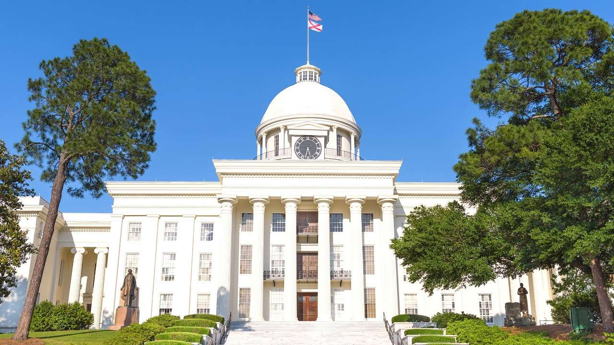

Alabama ist ein Bundesstaat der Vereinigten Staaten,
der zu den Südstaaten zählt. Er war lange geprägt von der Plantagenlandwirtschaft einer kleinen
weißen Oberschicht und von der Sklavenhaltung der Afroamerikaner, die etwa ein Viertel der
Bevölkerung ausmachen. Die Interessen der agrarischen Elite wurden nach dem Ende der Reconstruction
durch Diskriminierung wie Rassentrennung bis in die 1970er Jahre fortgeschrieben. Nach dem Zweiten
Weltkrieg diversifizierte sich die Wirtschaft des Bundesstaates, der immer noch zu den ärmsten des
Landes gehört.
Quellen- und Lizenzhinweis:
Dieser Text basiert auf dem Wikipedia-Artikel
Alabama
(geänderte Fassung) und steht unter der Lizenz
Creative Commons Attribution-ShareAlike 4.0 International (CC BY-SA 4.0).
Das Bild ist von
Destguides